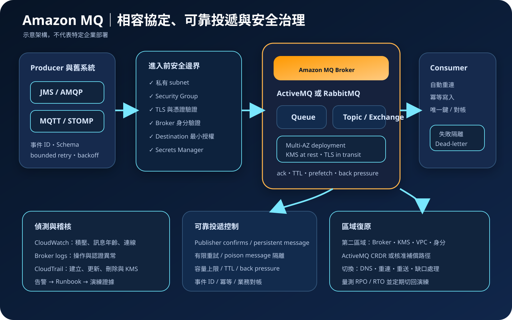

Amazon MQ：受管訊息代理、協定遷移與安全治理
Amazon MQ 是 Apache ActiveMQ Classic 與 RabbitMQ 的受管訊息代理服務，適合保留既有協定、用戶端與訊息模型並降低 broker 基礎設施維運負擔。AWS 管理代理主機與維護作業，但不會代替 queue／topic 設計、訊息生命週期、用戶授權、冪等處理、容量治理或災難復原。
作者：Dr. William｜查閱與發布：2026-10-04
服務定位
Amazon MQ 提供相容 Apache ActiveMQ Classic 與 RabbitMQ 的受管 broker。既有應用若已使用 AMQP、OpenWire、MQTT、STOMP 或 RabbitMQ AMQP 0-9-1 等訊息協定，可先評估在不大幅改寫訊息程式碼的前提下遷移。服務負責 broker 建立、底層主機、部分修補、故障替換與維護視窗；客戶仍須管理 broker engine 選型、版本相容、訊息拓撲、使用者、權限、連線、重試與資料治理。
Amazon MQ 不是所有非同步工作負載的預設答案。若系統不需要既有 broker 協定或相容性，可同時比較 Amazon SQS、Amazon SNS、Amazon EventBridge、Amazon Kinesis Data Streams 與 Amazon MSK。受管不等於免維運：訊息積壓、poison message、連線風暴、未確認投遞、錯誤 acknowledgement、過大的訊息、queue 數量失控與錯誤授權仍會造成中斷或資料風險。
核心概念與服務選型
訊息代理與投遞模型
- Broker：接收、保存、路由並交付訊息，是 producer 與 consumer 的中介。
- Queue：通常由一個或多個 consumer 競爭取用；應明確定義 acknowledgement、重試、逾時與 dead-letter 流程。
- Topic／Exchange：依訂閱、routing key 或 binding 將訊息分送至一個或多個目的地；兩種引擎的術語與行為不同。
- 持久性：durable destination、persistent message、複寫與儲存設定必須共同成立；不能只看單一選項。
- 至少一次語意：網路中斷、consumer 重啟或 acknowledgement 遺失都可能造成重送，下游須以穩定事件 ID 實作冪等。
- 流量控制：prefetch、publisher confirms、consumer concurrency、TTL、queue length 與 back pressure 共同影響記憶體和延遲。
ActiveMQ 與 RabbitMQ
- ActiveMQ：適合既有 JMS、OpenWire、AMQP、MQTT 或 STOMP 工作負載；可建立單一執行個體或 active／standby 部署。
- RabbitMQ：適合既有 AMQP 0-9-1 生態、exchange／binding／vhost 與 RabbitMQ 用戶端；可建立單一執行個體或多可用區 cluster。
- 引擎不能只看名稱：須驗證協定、用戶端函式庫、plug-in、認證、授權、拓撲、message ordering、交易與管理 API 相容性。
- 版本：受支援版本與升級政策會變動；建立前確認官方支援表，維護前在測試環境驗證 client、reconnect 與 rollback。
- 部署模式：正式環境通常需要多可用區型態，但高可用不代表跨區復原，也不保證應用程式已正確重連。
- 跨區：ActiveMQ 可評估 Cross-Region Data Replication；其他情境須另行設計第二區域、訊息補償與切換程序。
適合與不適合的使用情境
適合
- 既有應用已依賴 ActiveMQ、RabbitMQ、JMS 或標準 broker 協定，希望降低自行維護 broker 叢集的負擔。
- 企業整合、訂單工作流、背景作業與舊系統解耦需要 queue、topic、exchange、routing key 或 request／reply 模式。
- 遷移計畫要求保留既有 client library、訊息格式與路由邏輯，再分階段改善架構。
- 團隊需要控制 broker 引擎、版本、拓撲與授權，又希望 AWS 管理底層主機及部分維護工作。
- 團隊能持續治理 queue depth、訊息年齡、連線、acknowledgement、重試、dead-letter、容量與復原。
不適合或不能單獨完成
- 全新系統只需要簡單工作佇列或發佈／訂閱，且不需要 broker 協定相容性；可先比較 SQS 與 SNS。
- 需要事件匯流排規則路由與大量 AWS 服務整合，但不依賴 broker；可比較 EventBridge。
- 需要高吞吐 append-only 串流、分區重播或 Kafka 生態；可比較 Kinesis Data Streams 或 Amazon MSK。
- 要求跨多個外部系統的 exactly-once 業務交易。Broker 無法取代資料庫唯一性、冪等、補償與對帳。
- 希望多可用區部署自動等同跨區備援，卻沒有第二區域、DNS、應用程式、資料與演練計畫。
示意故事案例：保險理賠舊系統解耦
以下為示意案例，不代表特定企業或正式部署。 一家保險公司有數個使用 JMS 與 ActiveMQ 的既有理賠系統。前台送出案件後，文件辨識、規則審查、人工覆核與通知服務透過 queue 協作。團隊先盤點協定、client 版本、destination、selector、交易模式、訊息大小、尖峰速率、保留時間、可接受積壓、RPO／RTO 與月成本上限，再建立跨可用區 active／standby broker，並在非正式環境執行相容與故障測試。
應用程式部署在私有 subnet，只允許核准的 security group 經必要 TLS 埠連線。AWS 管理 API 由聯合登入、MFA 與短期憑證控制；broker 使用者依 producer、consumer 與稽核角色分離，authorization map 僅開放必要 destination。憑證與密碼由 Secrets Manager 管理，一般端點與調校參數放入 Parameter Store。每筆理賠訊息帶有不可變事件 ID，下游以唯一鍵防止重複入帳；超過重試上限的訊息送至 dead-letter queue。CloudWatch 監控 queue size、訊息年齡、consumer 數、CPU、記憶體、儲存與連線，broker audit log 進入 CloudWatch Logs，CloudTrail 保存控制平面變更。第二區域建立 ActiveMQ 複寫與應用程式待命環境，並定期演練升級、故障轉移、重複訊息、資料缺口與切回。

建置與運作流程
- 建立訊息清冊：記錄 producer、consumer、協定、client、destination、routing、message schema、資料分類、大小、TTL 與擁有者。
- 量測工作負載：收集平均與尖峰訊息率、連線與 channel／session 數、queue depth、訊息年齡、處理時間、重試與成長率。
- 選擇服務邊界：確認確實需要 ActiveMQ 或 RabbitMQ 相容性；與 SQS、SNS、EventBridge、Kinesis 及 MSK 比較。
- 驗證引擎與版本：測試協定、client library、序列化、交易、selector、exchange、binding、vhost、management API 與升級相容性。
- 選擇部署模式：依正式度、RTO、容量與成本選擇 ActiveMQ active／standby 或 RabbitMQ cluster；單一執行個體僅用於可接受中斷的情境。
- 建立私有網路：選擇 VPC、subnet 與 security group，只開放實際使用的 TLS 協定埠及核准來源，避免不必要公開存取。
- 分離控制與資料平面：Amazon MQ API 使用 IAM 控制；broker 訊息存取依引擎與版本使用 ActiveMQ／RabbitMQ 使用者及授權，符合支援條件的 RabbitMQ 也可採 IAM 驗證與暫時憑證。
- 保護機密與資料：broker 憑證或密碼存於 Secrets Manager，一般參數存於 Parameter Store；選擇 KMS key 並建立停用與刪除保護。
- 設計可靠投遞：定義 persistent message、acknowledgement、publisher confirms、重試上限、dead-letter、TTL、最大 queue 長度與 back pressure。
- 實作冪等：以穩定事件 ID、唯一性限制、條件寫入或處理紀錄避免重送造成重複交易。
- 管理連線：使用連線池、適量 channel／session、指數退避與 jitter；測試 broker 切換、DNS、TLS 與自動重連。
- 建立可觀測性：監控積壓、最舊訊息、in-flight、未確認訊息、連線、CPU、記憶體、儲存、錯誤與認證失敗。
- 演練復原：測試 broker／AZ 故障、poison message、KMS 拒絕、容量耗盡、版本升級、區域切換、重複與缺口處理。
成本、可用性與維運考量
Amazon MQ 成本主要來自 broker instance 執行時間、部署模式與儲存使用量，另可能包含標準資料傳輸、跨可用區或跨區流量、KMS、CloudWatch Logs、自訂指標、Secrets Manager、PrivateLink、NAT 與第二區域待命資源。ActiveMQ 可依需求選擇不同儲存類型；RabbitMQ 部署模式與節點數也會改變 instance 與儲存成本。實際單價、可用 instance 與區域支援會變動，部署前須以官方價格頁及負載測試重新估算。
降低成本不能只縮小 broker。連線風暴、過大訊息、過多 queue、過高 prefetch、無限重試、過長 retention、未清理 dead-letter、低效率序列化與過量日誌都會放大容量需求。應用程式端若沒有 back pressure，broker 即使擴大仍可能因 consumer 落後而再次積壓。
多可用區 active／standby 或 cluster 可降低單一節點與可用區故障影響，但用戶端必須能偵測斷線、自動重連並安全重試。維護與故障切換可能中斷既有連線；未確認訊息可能重送。跨區 RPO／RTO 需另行定義，不能以區域內高可用取代。正式上線前應量測切換時間、積壓恢復速度及重送比例。
Amazon MQ 特有資安風險與控制
- 控制平面與訊息平面混淆：管理 Amazon MQ 資源的 IAM 權限不應被視為自動取得所有 queue、topic、exchange 或 vhost 權限；訊息平面須依引擎、版本及所選驗證模式另行實施最小權限。
- ActiveMQ 預設授權過寬：建立明確 authorization map，依群組限制 destination 與操作；測試未授權 send、consume 與管理介面。
- RabbitMQ vhost 或 permission 過寬：依應用分離 vhost、使用者與 configure／write／read 權限，避免共用管理者帳號。
- 公開 broker 暴露：優先建立無 public accessibility 的 broker；security group 只允許核准來源與必要協定埠。
- 未使用協定擴大攻擊面：封鎖 AMQP、MQTT、OpenWire、STOMP、WebSocket 或管理埠中未使用的項目。
- 長期 broker 密碼：機密只存於 Secrets Manager，限制讀取與輪替；不得放入程式碼、映像、URL、標籤、名稱或日誌。
- Web Console 或 Management UI 暴露：限制管理介面網路來源，使用獨立管理身分，避免與應用程式帳號共用。
- TLS 驗證被停用：所有 client 驗證 broker hostname 與憑證鏈，不使用跳過驗證的測試設定進入正式環境。
- KMS key 停用或 grant 撤銷：分離 key administrator 與使用者，限制 key policy，監控停用與刪除排程；誤撤銷可能使 broker 進入 degraded 狀態。
- Poison message 無限重送：設定最大重試、dead-letter 與隔離分析，限制訊息大小及反序列化型別。
- Acknowledgement 錯誤：明確選擇 ack 時機；consumer 寫入成功後再確認，並以冪等與對帳處理重送。
- Queue 無界積壓：設定 TTL、max length、磁碟與記憶體告警、publisher confirms 及 back pressure；拒絕策略須由 producer 正確處理。
- 序列化攻擊：採允許清單、schema 驗證與大小限制，不直接反序列化不受信任物件或執行訊息內容。
- 監控盲區：CloudTrail 主要記錄 Amazon MQ API，不會代替 broker 內部訊息稽核；須同時啟用適用的 broker logs、audit logs 與 CloudWatch 指標。
- 維護造成連線中斷：用戶端實作 bounded retry、backoff、jitter、reconnect 與冪等，並在維護視窗演練。
- 跨區複寫擴大資料面：只複寫核准訊息，限制第二區域角色、KMS、網路與管理者；監控複寫延遲並驗證升降級流程。
共同責任邊界
AWS 負責 Amazon MQ 受管服務及底層雲端基礎設施安全、broker 主機佈建、硬體故障替換與服務支援範圍內的維護。客戶仍負責引擎與版本選型、VPC 與 security group、IAM、broker 驗證模式與授權、KMS key、訊息內容、destination 拓撲、client、acknowledgement、重試、冪等、監控、成本及跨區復原。
客戶須落實 IAM 最小權限、管理者 MFA 與短期憑證、私有網路隔離、避免不必要公開存取、KMS 加密、Secrets Manager／Parameter Store、CloudTrail／CloudWatch、dead-letter 與持久保存，以及第二區域復原演練。AWS 不會替客戶判斷某個使用者是否能讀取敏感 queue、訊息是否重複入帳、poison message 是否無限循環、consumer 是否能在故障後重連，或另一區域能否在 RTO 內接手。
上線前可執行檢查清單
- □ 已記錄所有 producer、consumer、協定、client、destination、schema、資料分類、TTL、RPO／RTO 與擁有者。
- □ Amazon MQ 與 SQS、SNS、EventBridge、Kinesis、MSK 的相容性、維運與成本差異已完成比較。
- □ ActiveMQ 或 RabbitMQ 的版本、協定、library、交易、routing、管理 API 與升級相容性已測試。
- □ 正式環境採適當多可用區部署，單一執行個體只用於可接受中斷的工作負載。
- □ 人員使用聯合登入、MFA 與短期憑證；建立、更新、刪除與讀取 broker 的 IAM 權限已分離。
- □ Broker 驗證模式符合引擎與版本支援；producer、consumer、管理與稽核權限已分離，destination／vhost 拒絕路徑已測試。
- □ Broker 無不必要公開存取；subnet、security group、DNS、協定埠、管理介面與 egress 均受限制。
- □ 所有 client 使用 TLS 並驗證 hostname 與憑證；未使用協定及 Web Console 來源已封鎖。
- □ 靜態資料使用核准 KMS key；key policy、grant、停用、刪除與復原程序已驗證。
- □ Broker 機密只存於 Secrets Manager，一般設定存於 Parameter Store；名稱、標籤、URL 與日誌無敏感資訊。
- □ Persistent message、durable destination、acknowledgement、publisher confirms、TTL、重試與 dead-letter 已定義。
- □ Consumer 使用穩定事件 ID、唯一鍵或條件寫入實作冪等，並有業務對帳。
- □ 已設定 queue depth、oldest message、unacked、連線、CPU、記憶體、儲存、錯誤與認證失敗告警。
- □ CloudTrail 已建立持續 trail；適用的 general／audit broker logs 已送至 CloudWatch Logs 並受保留與存取控制。
- □ 已執行訊息大小、尖峰吞吐、連線、積壓恢復、poison message、broker／AZ 故障與維護切換測試。
- □ 第二區域的 broker、KMS、網路、身分、應用與資料路徑已建立，並演練切換、重送、缺口、對帳與切回。
AWS 官方一手來源
- What is Amazon MQ?（查閱：2026-10-04）
- Using Amazon MQ for ActiveMQ（查閱：2026-10-04）
- Deployment options for Amazon MQ for RabbitMQ brokers（查閱：2026-10-04）
- Deployment options for Amazon MQ for ActiveMQ brokers（查閱：2026-10-04）
- Authentication and authorization for Amazon MQ brokers（查閱：2026-10-04）
- How Amazon MQ works with IAM（查閱：2026-10-04）
- IAM authentication for Amazon MQ for RabbitMQ（查閱：2026-10-04）
- Security best practices for Amazon MQ（查閱：2026-10-04）
- Data protection in Amazon MQ（查閱：2026-10-04）
- Infrastructure security in Amazon MQ（查閱：2026-10-04）
- Logging Amazon MQ API calls using AWS CloudTrail（查閱：2026-10-04）
- Monitoring Amazon MQ brokers using Amazon CloudWatch（查閱：2026-10-04）
- RabbitMQ broker setup and connection best practices（查閱：2026-10-04）
- Amazon MQ for RabbitMQ broker defaults（查閱：2026-10-04）
- Network of brokers for Amazon MQ for ActiveMQ（查閱：2026-10-04）
- Cross-Region data replication for Amazon MQ for ActiveMQ（查閱：2026-10-04）
- Amazon MQ pricing（查閱：2026-10-04）
- AWS Well-Architected Security Pillar｜Shared responsibility（查閱：2026-10-04）
內容說明
本文依查閱日可用的 AWS 官方文件整理，作為基礎學習與架構討論材料；實際部署仍須依最新引擎版本、區域支援、broker instance、配額、協定、認證方式、網路能力、價格、資料分類、組織政策與復原演練結果調整。